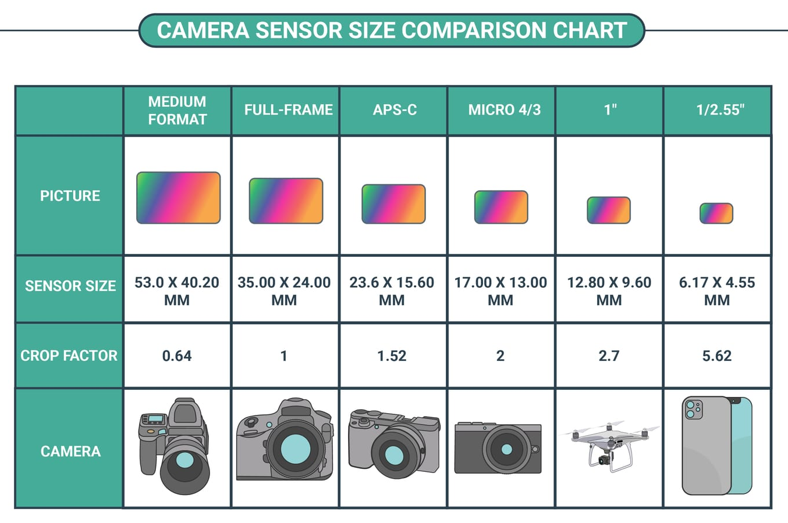
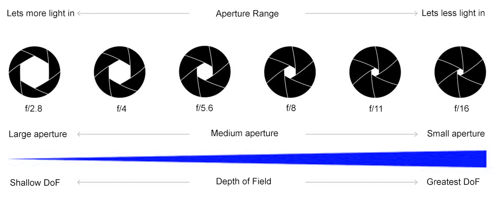
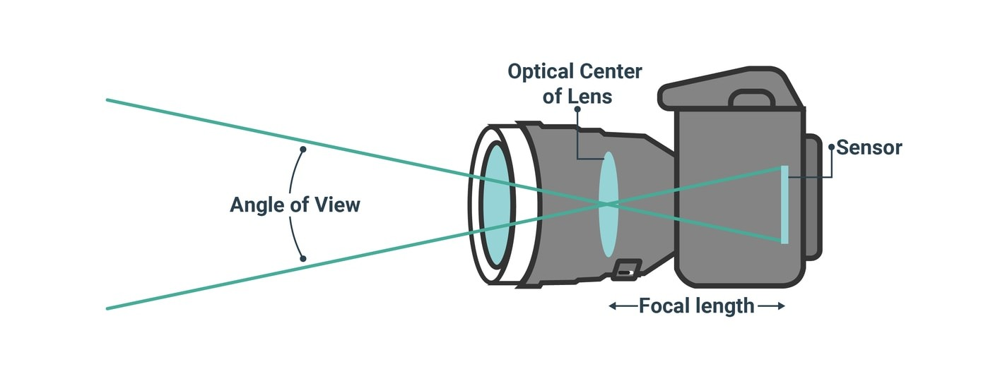
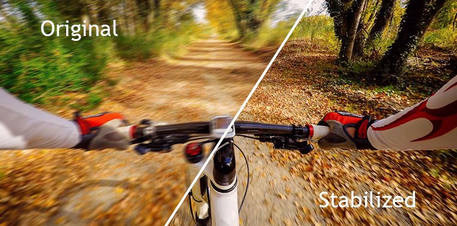
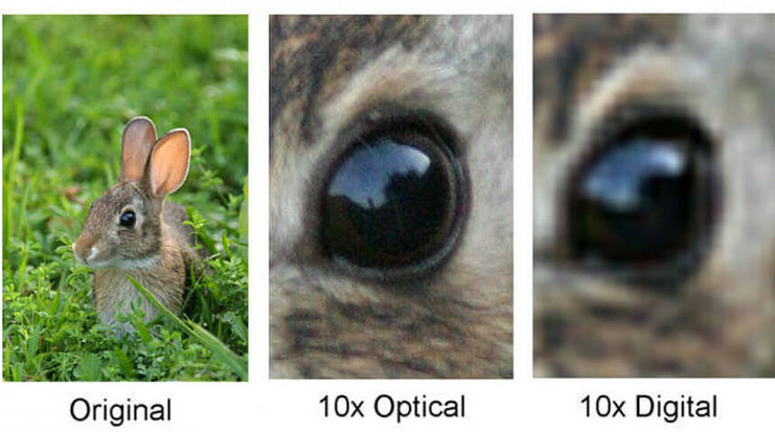
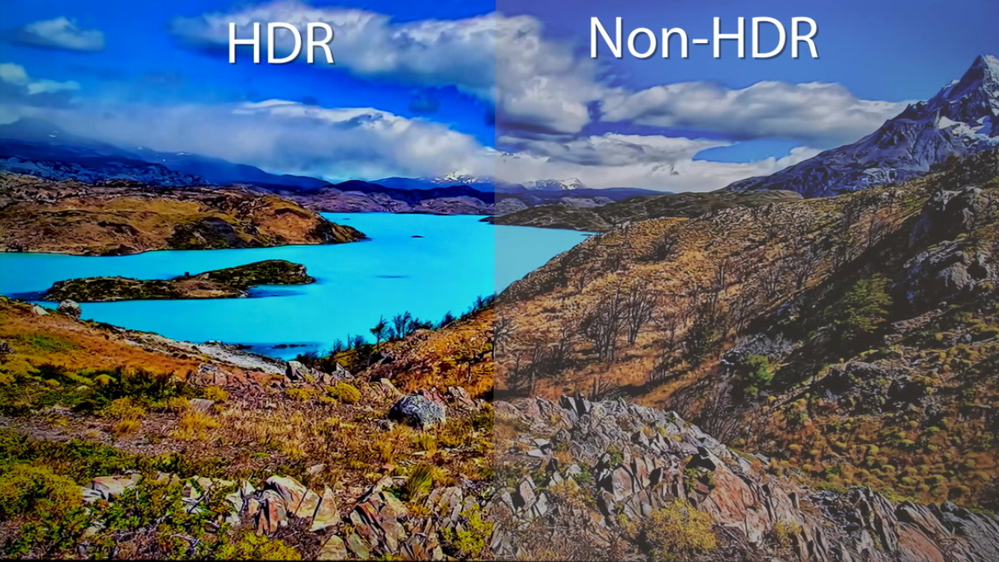
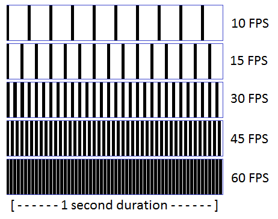

Smartphone Camera Guide
The camera has become the biggest selling point of today’s smartphones. As a result, a lot of people want to know what type of camera a phone is packing before they even consider buying it.
Camera specs explained
Megapixels refers to the number of small picture elements in a photo called pixels.
These are usually really tiny dots or squares that make up a complete digital image. A million pixels are known as a megapixel. A 12MP photo is made up of twelve million pixels. This is known as the resolution. The more megapixels a smartphone camera has, the higher the resolution of the photos it produces. A high resolution camera can give you an image with more clear detail than a low resolution camera. Today, there are some smartphone cameras with high megapixel counts, some as high as 108MP. But do not be misled by super-high megapixel counts. Megapixels alone DO NOT guarantee better camera performance. There are many other factors that affect picture quality.
A mobile camera’s image sensor is a device that takes the light that enters the camera and produces a digital image from it.
The size of the sensor is important because the bigger the sensor, the more light it can potentially receive. The more light it can receive, the better the picture quality. This is especially important in smartphone cameras because of their size limitations.
These are measured in micrometers, often referred to as microns. The symbol for microns is ‘µm’ or just . One millimeter 1mm is equal to 1000 micrometers A mobile camera sensor with a pixel size of 2.4µm is far superior to one with a tiny pixel size of only 0.8µm. That’s because large pixels on the sensor gather more light and are less likely to produce digital noise.
The wider the opening, the more light will come through. The lower the f-stop(f-number), the more light your smartphone camera can capture. More light means better pictures.
Aperture is the adjustable opening between the lens and the sensor that controls how much light reaches the sensor. How wide or narrow the aperture is is expressed in f-numbers. A low f-stop (e.g. f/2) means a wider aperture than that of a higher f-number (e.g. f/16). In smartphone cameras where getting as much light as possible is paramount, having the widest aperture possible is very ideal. On smartphone cameras, the aperture is fixed, and the f-number varies from phone to phone. Some phones have a fixed aperture of f/2.0, others f/1.7 or even as low as f/1.4. The f-stop, which is also known as the f-number, is the ratio of the lens focal length to the diameter of the entrance pupil.
Measured in millimetres (mm), the term 'focal length' refers to the distance between the camera’s image sensor and where light converges and focuses the image inside the lens.
A short focal length is great for shooting landscapes with your phone because it gives you a wide angle-of-view that captures more of the scene. The longer the focal length of a lens is, the more magnified your subject will appear, and the less of the scene you’ll see in the frame. This is perfect for portrait photography, where the attention is on the person, not the scenery. Ultrawide-angle lenses have an even wider angle of view than wide-angle lenses because they have a smaller focal length such as the 16mm ultrawide lens.
Image stabilization refers to the way a mobile camera reduces camera shake in order to avoid motion blur that is associated with camera movement while a photo is being taken. Image stabilization can be achieved mechanically (OIS), digitally (EIS), or through a combination of both (AIS).
Optical image stabilisation (OIS) counters slight movement and shake of the camera by moving the image sensor or the lenses using a gyroscope. Electronic image stabilisation (EIS) is more of a software-reliant post-processing effect rather than a mechanical function. And because of the way it works digitally, it is best suited for capturing stable video with a smartphone. AIS is a stabilization system currently found on Huawei devices. AIS stands for Artificial Intelligence Stabilization and is mostly not any different from EIS.
For the longest time, smartphone cameras were only able to zoom in digitally. The problem is that digital zoom degrades the picture quality more and more the further you zoomed in. Pixelation becomes an issue because, with digital zoom, the camera basically crops the image and then digitally expands it to fit the frame.
Smartphone companies added optical zoom to their cameras when they introduced phones with multiple cameras. Optical zoom is far better than digital zoom because it uses the lens to zoom, thus preserving picture quality. Phones with only one camera cannot zoom in optically. How far you can zoom in on your smartphone camera is determined by the focal length of the telephoto lens.
HDR stands for High Dynamic Range.
It allows you to capture images that have a great balance between the dark areas of the photo (known as shadows) and the lighter ones (highlights). This way, the resulting picture will neither be overexposed nor underexposed.When HDR is enabled, the camera takes multiple pictures at different exposure levels. Then, with software technology, the photos are combined into the final composite photo with balanced highlights and shadows.
A depth sensor is a camera that is solely responsible for analyzing the scene and creating a three-dimensional depth map from the data it has collected.
Depth maps are useful for things such as virtual reality and augmented reality applications. In mobile photography, depth maps are used to separate the foreground from the background in order to create the popular shallow depth-of-field bokeh effect, especially in portrait photos.
This basically refers to the camera’s ability to take multiple shots and stitch them together to create one blended super-wide shot.

Video resolution refers to the number of pixels that a video has in each dimension, similar to image resolution. The frame rate of the video is measured in frames per second. A typical movie has 24fps which essentially means in each second, there are 24 moving images displayed in succession. The higher the frame rate, the smoother the video appears. 60fps is commonly used in smartphone cameras.
©Alin Vlad WebShop * 2020